Introduction
File Formats
This document provides an overview of some of the concepts involved in creating art for Torque. The table below summarizes the file formats used for Torque texture and shape resources.
| Extension | Description |
|---|---|
| dts | DTS is the native, binary file format used by Torque to store shape (geometry, LOD, bone, and animation) data. DTS exporters exist for several 3D modeling packages such as 3ds Max, Maya, XSI, Blender, and Milkshape3D. |
| dsq | DSQ is the native, binary file format used by Torque to store animation data separately from the shape data. This is most often used to share animations between a set of shapes with the same skeleton. |
| dae, kmz | COLLADA is an XML based model interchange format. Many 3D modeling packages support COLLADA import and export. |
| bmp, gif, jpeg, jpg, jng, mng, png, tga, dds | Supported texture file formats. Note that texture dimensions should be powers of 2 wherever possible such as 16, 32, 64, 128, 256, so forth, although they need not be square. Some older hardware is unable to process non-power-of-2 textures at all, and even modern hardware will pad such textures up to the next largest power of 2 when loaded which wastes VRAM. |
Coordinate System
Torque uses the same coordinate system as 3ds Max. Characters and vehicles should be exported facing the +Y axis (or the equivalent "into the screen" axis if the modeling app uses a different coordinate system).
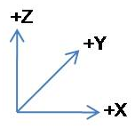
When exporting to DTS, one modeling-app unit equals one unit in Torque. When exporting to COLLADA, you are free to work in whatever units you like. They will be scaled appropriately when importing the model into Torque.
Normal/Bump Maps
Torque uses DirectX style normal maps, where the green (Y) channel contains the DOWN vector. This is opposite to the system OpenGL uses which has the UP vector in the green channel. If your normal maps appear backwards in Torque, you may need to invert the green channel manually.
3-Space Features
COLLADA and DTS
Torque supports two different formats for 3D geometry and animation data: COLLADA (model.dae) and DTS (model.dts). The two formats have different strengths and most teams will find an appropriate mix of both to be the best practice. Models in either format can be further customized after loading into Torque using TSShapeConstructor (see the TorqueScript reference documentation for more details). This TorqueScript accessible class allows nodes, sequences and detail levels to be examined and modified at runtime. Common uses are to define and split animation sequences embedded within a COLLADA file, and to share animations between characters with the same skeleton.
It should be noted that all changes applied by a TSShapeConstructor script occur to the in-memory model; nothing is cached to disk, so the transformations will occur every time the shape is loaded by Torque. In some cases therefore it may make sense to 'bake' transformations by using the dae2dts tool as part of a custom import/export pipeline or release packaging script.
COLLADA is intended to be the primary model format during development of a Torque game; there are COLLADA importers and exporters for almost every 3D modeling application around, and in a pinch you can even edit the XML dae file manually - handy if a programmer or level designer needs to test a minor tweak without bothering the artists.
DTS is generally the model format of choice when releasing a game. It is an optimized, binary format that loads much faster than COLLADA, and also provides a small measure of protection for art assets (most applications can import DAE, but very few can import DTS). The normal workflow is to use COLLADA during development, then make sure all models are converted to DTS for release.
There are several different approaches available to achieve this:
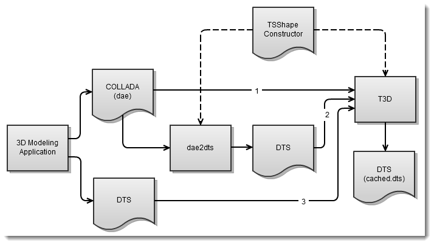
1. Use the autogenerated cached.dts files
When Torque imports a COLLADA model it saves the resulting 3-space shape to a DTS file in the same folder as the DAE (model.cached.dts). The next time the DAE file would be loaded, Torque first checks if there is a newer cached.dts file in the same folder and if so, loads that instead. For simple models, this means you can simply strip the DAEs from the released version of the game, leaving only the cached.dts files. All datablocks and mission files still refer to the DAE model, but Torque will automatically load the cached.dts in its place.
Note that the cached.dts file represents the converted DAE model only - changes applied using a TSShapeConstructor script are only made to the in-memory shape, so are not included in this file.
2. Use the dae2dts tool
The dae2dts tool can be used to convert COLLADA files to DTS as needed. If using this approach, datablocks and mission files should refer to the coverted DTS output file, not the original DAE file. The dae2dts tool bakes any model transformations made using TSShapeConstructor into the final DTS model, so make sure that the TSShapeConstructor script used with dae2dts is not run when loading the DTS output file into T3D (by making the filenames different, or keeping the output DTS file in a different folder) or the changes will be applied twice!
Of course, there is no reason you could not use one TSShapeConstructor script with dae2dts to bake changes, then use another TSShapeConstructor script when loading the baked DTS file into T3D to apply dynamic changes (like auto-loading all sequence files within a folder for example).
3. Export directly to DTS
If using a modeling program with DTS export support, it may make sense to export certain models directly to DTS; although current DTS exporters have several limitations (single UV set, no vertex colors, limited to around 11000 triangles per mesh) compared to COLLADA.
Level-of-Detail (LOD)
LOD is an extremely important concept to master in order to produce a great looking game that plays smoothly on low/mid-range hardware. Essentially, it involves rendering successively less complex versions of a shape in order to improve performance. The metric used in Torque to control LOD is the estimated size of the shape on screen; as the shape gets further from the camera it will become smaller on screen, and a simpler version of the mesh may be rendered without loss of fidelity.

A Torque 3D shape (sometimes called a 3space or more commonly DTS shape) consists of the following elements:
- node
- A node is a place-holder for transform (position and rotation) information. Nodes are arranged in a parent/child hierarchy allowing complex skeleton structures to be built up.
- sequence
- A sequence is a set of key-framed node transforms and object states (e.g,. visibility).
- mesh
- A mesh is a piece of triangulated geometry, and may be a normal mesh or a skin (vertex weighted mesh). Each mesh is associated with an object and a detail level.
- object
- An object is a set of meshes, each at a different detail level. Each object is attached to a single node, and is rendered at that node's current transform. Note: the transform may or may not be animated. When the object is rendered, only the mesh associated with the active detail level will be rendered. Objects do not need to define a mesh at every detail level. For example, some parts of a shape could be made visible only when near to the camera.
- detail
- A detail level is a set of meshes (one from each object) that will be rendered when the detail level is active.
With those definitions in mind, a 3space shape can be visualized in a hierarchy as follows:
+-base01
+-start01
+-Torso Object Torso with details: 256 64 32
+-Head Object Head with details: 256 64 32
+-Armor Object Armor with details: 256 64
+-ColBox Object ColBox with details: -1
Or in table form as:
| Detail Size | Object Name | |||
|---|---|---|---|---|
| Torso | Head | Armor | ColBox | |
| 256 | Torso256 | Head256 | Armor256 | |
| 64 | Torso64 | Head64 | Armor64 | |
| 32 | Torso32 | Head32 | ||
| -1 | ColBox-1 | |||
The shape contains 4 objects (Torso, Head, Armor, ColBox), each of which have one or more meshes at different detail levels. Before rendering the shape, Torque estimates how large it would appear on-screen, and determines the appropriate detail level to render. Only the meshes in that detail level (a 'row' in the table above) are rendered. The estimated size is based on the shape's bounds, the camera distance and Field-of-View (FOV). The following table shows how the shape will be rendered as it moves further from the camera:
| Estimated size | Selected Detail | Rendered Meshes |
|---|---|---|
| >= 256 | 0 (size=256) | Torso256, Head256, Armor256 |
| >= 64 and < 256 | 1 (size=64) | Torso64, Head64, Armor64 |
| >= 32 and < 64 | 2 (size=32) | Torso32, Head32 |
| < 32 | none | none |
Note that detail levels with negative sizes will never be chosen for rendering. Once the estimated size is less than the smallest positive detail size, no geometry will be rendered for the shape. You can force a shape to always render something by making the smallest positive detail level have size=0. Negative detail level sizes are used to store non-rendered geometry such as collision meshes. In the shape above, the ColBox object defines a single mesh to be used for collision detection and will never be rendered due to its detail size of -1.
See also
Bounds
Every 3D shape includes an axis-aligned bounding box. This box appears around the shape when it is selected in the World Editor, and can be used for simple collision detection or mouse-hit picking. The bounding box is also used to determine which shape detail level to render (see LOD). The size of the bounding box is not fixed to the shape geometry. The modeler is free to define a custom bounding box extent for an object. This is normally done prior to DTS/DAE export by creating a cube mesh called "bounds" with the appropriate dimensions.
See also
Collision Geometry
Collision geometry is a special minimal version of the shape which is used in the game engine's collision system. In general, if there are fewer polygons in a collision volume then the collision detection will be faster. Collision geometry is stored in a shape within one or more detail levels with negative size values (indicating that the detail level is not to be rendered). Collision detail levels must be named Collision-X or LOS-X for collision or line-of-sight (raycast) collision respectively. LOS collision meshes are only used in raycast tests for things like projectile collision. X is a number from 1 to 8 for collision meshes, or 9 to 16 for LOS collision meshes. If your modeling application does not support hyphens in names, use an underscore instead (e.g. Collision_1).
The name of the collision mesh for a given detail level can give a hint to the Torque engine about what type of geometry to use. This allows for significant performance improvement in the case of the box, sphere and capsule primitives, or for non-convex geometry to be used for collision detection. Any mesh that does not match one of the names below will be interpreted as a generic convex hull (i.e. the same as ColConvex). In this case, the vertices of the mesh are used to construct a convex hull when the shape is loaded.
- ColBox
- This will be converted to a box primitive (that bounds the mesh) when the shape is loaded.
- ColSphere
- This will be converted to a true sphere primitive (that bounds the mesh) when the shape is loaded.
- ColCapsule
- This will be converted to a true capsule primitive (that bounds the mesh) when the shape is loaded.
- ColConvex
- A generic convex mesh, converted to a true convex hull when the shape is loaded.
- ColMesh
- A generic triangular mesh that does not need to be convex. This type of geometry is the most expensive for collision testing, and should be kept as simple (fewest triangles) as possible.
Prior to export, you should add the size of the particular detail level to the mesh names above. When Torque 3D encounters one of the primitive mesh types (Box, Sphere, Capsule), it uses the mesh bounding box to quickly calculate the dimensions (length, radius etc) of the box, sphere, or capsule. For this reason, the mesh should be aligned to the local coordinates of the node that instantiates it as shown below. This ensures the axis-aligned bounding box is a tight fit and that the calculated primitive dimensions are accurate.
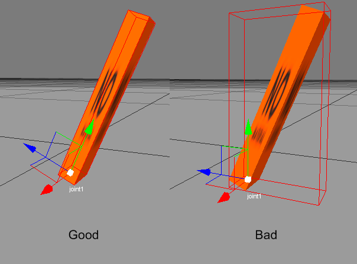
See also
Billboards
A 3D mesh may be marked as a billboard before export to DTS/DAE, or directly in the Torque 3D Shape Editor. When a billboard mesh is rendered, it is rotated such that it always faces the camera (technically, the rotation is such that the mesh forward (+Y) axis points out of the screen). A shape may contain a mix of billboard and non-billboard meshes. For example, you could have an explosion shape in which shrapnel flies out from the center and also have little explosion balls fly out that are just flat polygons that always face you. A second type of billboard is the Z billboard, which rotates the mesh to face the camera only around the Z (up) axis as shown below:
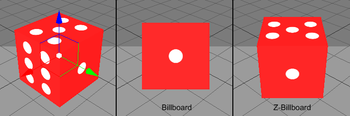
The billboard mesh's center of rotation is the position of the node to which that mesh is attached. For example, a tree model might have multiple branches set up as billboards, all attached to different nodes such that each branch is rotated around its own node, rather than the center of the tree.
The exact details of how to export billboards to a DTS shape will depend on the modeling package, but in general it is done by prefixing the name of the mesh with BB:: (or BB_ if the modeling app does not support colons in names) for a normal billboard, or BBZ:: (or BBZ_) for Z billboards.
See also
- Setting up billboards in Milkshape3D
- Setting up billboards in COLLADA
- Setting up billboards in T3D Shape Editor
Imposters
Imposters (also known as AutoBillboards) are commonly used as the last visible detail level for when the model is far away from the camera. These detail levels are special in that Torque generates a series of low-resolution snapshots (both diffuse and normal maps) of the model at different camera angles and stores these in two DDS files in the same folder as the model. When the imposter detail level is active, Torque selects one of these snapshots to render instead of the 3D geometry. With appropriate settings, this can give a significant performance increase with negligible loss in visual quality. As the camera moves around the shape, the Torque engine displays the appropriate snapshot. Imposters are often used as the smallest detail level since they are very efficient to render being composed of only two triangles.
Imposters may be configured using the following settings (note: polar billboards are the two billboards that face straight up and straight down, i.e. the ones at the poles):
| Name | Type | Description |
|---|---|---|
| BB::DL | integer | Index of the detail level used to generate the snapshots (usually 0).
|
| BB::DIM | integer | Size (width and height) of each snapshot in pixels. Use powers of 2 such as 32, 64, 128 etc. |
| BB::EQUATOR_STEPS | integer | Number of snapshots around the horizontal axis of the model. |
| BB::POLAR_STEPS | integer | Number of longitudinal steps between the polar billboards. Polar steps do not include or calculate imposters created for the top or bottom of the shape, only the billboards in between. The numbering of this setting may seem counterintiutive, but here's how it works:
|
| BB::INCLUDE_POLES | boolean | Flag indicating whether to generate snapshots of the poles (top and bottom) of the model. When this is off the BB::POLAR_ANGLE setting is irrelevant. |
| BB::POLAR_ANGLE | float | Angle (in degrees) from the equator that acts as the threshold between the polar billboards and the rest of the billboards. |
When Torque loads a shape with an imposter detail level, it automatically generates the files that contain the billboard images. The files are titled shapename.imposter.dds and shapename.imposter_normals.dds.
Carefully select step settings to optimize your imposters to boost quality and reduce use of disk space. For example, BB::EQUATOR_STEPS=5 and BB::POLAR_STEPS=2 with no polar billboards will give 25 imposters. Each being 256x256, that will result in two imposter files (one for diffuse/transparency maps, and one for normal map) that are 1024x2048:
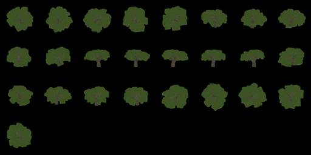
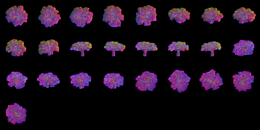
In fact, there is a lot of unused white space at the bottom of these textures. You could increase BB::EQUATOR_STEP to 6 adding five more billboards without increasing the overall imposter texture size. Thats a fifth more imposter textures at almost no cost. Also, make sure your bounding box is as tight on your shape as possible to reduce the whitespace between billboards and maximize the resolution of each billboard with their size limits (256x256 in the example above).
With proper settings your meshes will automatically billboard in-game.
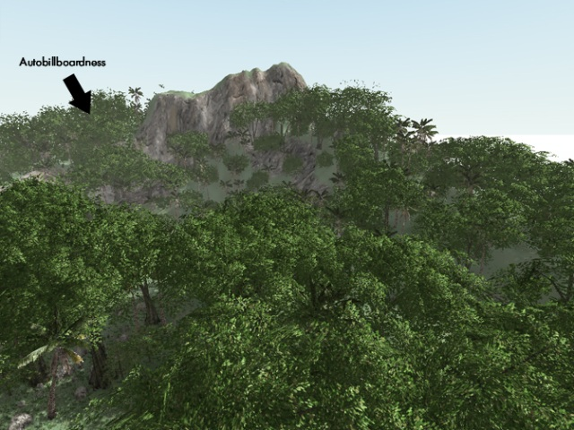
See also
- Setting up imposters in Milkshape3D
- Setting up imposters in COLLADA
- Setting up imposters in T3D Shape Editor
Mounting
Objects in Torque may be mounted to other objects, such as a Player riding a WheeledVehicle or a weapon placed in the player's hands. Usually the object to be mounted has a node named mountPoint. For example, a weapon will be mounted in the player model's hand at node mount0. The mountPoint node is not essential however. If not present, the mounted object's origin is used as the mount point. Objects can be mounted from script at runtime, or in the Torque 3D Shape Editor.
function PlayerData::onAdd(%this, %obj)
{
// put the crossbow in the player's hand
%obj.mountImage(CrossBowImage, 0);
};
See also
Animation Concepts
Threads
Animation threads allow multiple sequences to play at the same time on a single shape. For example, a 'headside' animation could rotate the player's head to look at something at the same time as a running animation is playing. Each animation sequence is played using a thread. Threads for non-blend sequences are applied first (in order of increasing priority), then blend sequence threads are applied on top (in order of increasing priority). The following rules determine what happens when more than one thread controls the same node in the shape:
- If two non-blend sequences control the same node, the sequence with higher priority will animate it.
- If two non-blend sequences with the same priority control the same node, the thread that was created last will animate it.
- Blend sequences are applied on top of any previous thread, so if two blend sequences control the same node, both will animate it (applied in order of increasing priority, or thread creation order if priority is the same).
Threads can be initiated from script as follows:
%obj.playThread( 0, "run" ); // play the "run" animation in thread slot 0
See also
- ShapeBase TorqueScript reference
- Setting up threads in T3D Shape Editor
Ground Transforms
Animation sequences that move the character should include a ground transform. This tells the engine how fast the character would move along the ground when the animation is played back at normal speed. In the case of a Player object, this allows Torque to scale the animation playback speed to match the in-game speed that the Player is moving. For example, if the model was animated such that it would normally move at 3 units per second, but in-game was moving at 6 units per second, then the animation can be played back at double speed so the feet do not look like they are skating along the ground. Another use for ground transforms is to automatically switch between walking and running animations based on the in-game velocity of the Player.
The exact details of how to export ground transforms will depend on the modeling package. In general, the animation should be created so the character moves through space, rather than running or walking in-place. Animate the bounds node to move with the character so there is no translation relative to the bounds node. On export, the ground transform is determined by subtracting the movement of the bounds node from the walking or running animation so that it will play in-place in Torque 3D.
See also
Triggers
Triggers are arbitrary markers that can be used to call events on specific frames in a sequence. For example, a trigger can be responsible for generating footstep sounds and footprints when the feet hit the ground during walk and run animations. There can be up to 30 independent trigger states each with their respective on (1 to 30) and off (-1 to -30) states. You decide what each of those trigger states means. You should work with your programmer to define what the trigger states mean and how you should use them.
For example, you could have one trigger for each foot of a character that creates a footprint when the foot is down on the ground. Let's say that a triggerState of 1 is the left foot down and a triggerState of 2 is the right foot down. When the sequence plays the frame during which the left foot touches the ground, you could have a trigger on that frame that has a triggerState of 1 to create a footprint. You would then create another trigger with a triggerState of 2 for the right foot. You don't necessarily need to turn off the footprints (let's assume that the programmer will turn them off when it is necessary), but you could by creating two more triggers with triggerStates -1 and -2.
See also
Blends
Blend animations allow additive animation on the node structure of the shape. These will not conflict with other threads, and can be played on top of the node animation contained in other threads; such animations are relative. Blends only store the changes that occur over the course of the animation and not the absolute position of the nodes. This means that if a node is transformed by a blend animation, it includes only the transform information for that node, and it will add that transformation on top of the existing position in the base shape. Common uses for blend animations are facial expressions, head turning or nodding, and arm aiming.
Bear in mind that a blend can be played as a normal sequence, or it can be played on top of other sequences. When another sequence is playing, it will alter the root position, and the blend will be applied on top of that.
If you try to do a blend sequence where the root position is different than the 'normal' root (in the default root animation), you might expect that the blend will blend it to the new root (the position the character is positioned in during the blend animation). However, it does not work this way. Since nothing would actually be animating, it doesn't move the bones to the new position. What is contained in the blend sequence is only transform offsets from the blend sequence root position.
It is not a good idea to have a different root position in your 'normal' animations and your blends, as they can easily get out of sync.
The values added from the blend animation are based on the root position in the DAE/DTS/DSQ file. This root position does not have to be the beginning of the animation. You can pick any position for the blend animation to reference.
This is useful, because you can have a blend animation that can have a reference position that is the 'root' position. For animation like hip twists and arm movements (as in the 'look' animation), the character can be in a natural default state. In this way, you can have one animation control the character through the base pose to an extreme in either direction while referencing the default 'base' state, which will exist somewhere in the middle of the blend animation.
See also
Materials
Material Mapping
In Torque, Materials (note capital M) are TorqueScript objects that define properties used when rendering a surface. Each Material object is mapped to a single material (note lowercase m) target. These targets are the names of the materials defined in the model itself (DTS, DAE etc), and are usually the same as the material names in the application that exported the model.
For example, a model containing a single material target soldier might have a Material defined as follows:
singleton Material( Mat_Soldier ) // Object name is arbitrary (though must be unique)
{
mapTo = "soldier"; // This is the material target name
diffuseMap[0] = "soldier_armor.jpg"; // Texture name is arbitrary
};
For Materials that consist of only a diffuse texture, the Material object definition can be omitted entirely and Torque will automatically create and map a simple Material. For this to work, the diffuse texture must be in the same folder as the model, and must have the same name as the material target. In this case, the diffuse texture would have to be named soldier.png (extension is not important, only the base filename).
Torque's Material system requires artists to be careful when naming materials in their modeling application prior to export; any models that share the same material target names will also share the same script Materials.
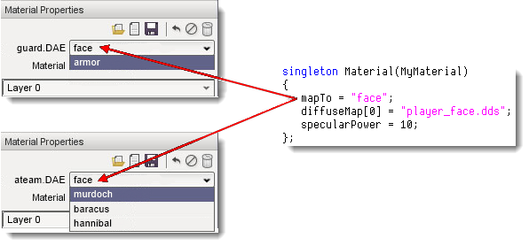
Target names are also important if the model is to support skin swapping.
Material and Skin Swapping
There are two ways to change the Materials used by a model. The first is by remapping the Material object itself (ie. changing the 'mapTo' field). This will change the mapping for all models that use that material target. This is most easily done in the Material Editor; just select the shape and target to swap and choose a new Material using the Material Selector GUI  .
.
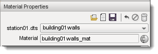
Generally this is only done during level editing and is not the recommended way to dynamically change Materials on an object at runtime.
Skinning
The second way to change Materials is to use skinning. Changing the skin of an object essentially renames its material targets (on a per-object basis) - allowing each instance of the same model to use different Materials. Reskinning an object replaces the old skin name at the start of each material target with the new skin name.
For example, a character model contains 3 materials: base_head, base_body, and face. The script Materials might be defined as follows:
singleton Material( Mat_Base_Head )
{
mapTo = "base_head";
diffuseMap[0] = "base_head_D.dds";
normalMap[0] = "head_N.dds";
specular[0] = "0.9 0.9 0.9 1";
specularPower[0] = 10;
};
singleton Material( Mat_Base_Body )
{
mapTo = "base_body";
diffuseMap[0] = "base_body_D.dds";
normalMap[0] = "body_N.dds";
specular[0] = "0.9 0.9 0.9 1";
specularPower[0] = 10;
};
singleton Material( Mat_Face )
{
mapTo = "face";
diffuseMap[0] = "face_D.dds";
normalMap[0] = "face_N.dds";
specular[0] = "0.9 0.9 0.9 1";
specularPower[0] = 5;
};
Note that the 'mapTo' fields of the script Materials match the model material names. The initial 'old' skin name is "base"; material targets that support skinning should use this as the start of the material name (followed by an underscore or period) in the modeling app prior to export. When a new skin name is applied, it replaces the old skin name in all of the shape material targets with the new skin name. For example, calling:
%obj.setSkinName( "blue" );
Would change the material target names for this instance of the model as shown below:
base_head => blue_head base_body => blue_body face => face
Note that the face material target was not changed since it did not start with the old skin name "base". Most importantly, only the object for which setSkinName was invoked will use the new Materials - all other objects that use the same model (or any model that shares the target names) are not affected.
With this knowledge, we can now define the Materials used to reskin this model.
// 'blue' skin materials
singleton Material( Mat_Blue_Head : Mat_Base_Head )
{
mapTo = "blue_head";
diffuseMap[0] = "blue_head_D.dds";
};
singleton Material( Mat_Blue_Body : Mat_Base_Body )
{
mapTo = "blue_body";
diffuseMap[0] = "blue_body_D.dds";
};
// 'red' skin materials
singleton Material( Mat_Red_Body : Mat_Base_Body )
{
mapTo = "red_body";
diffuseMap[0] = "red_body_D.dds";
};
In this example each skinned Material extends the base Material so that all fields are the same except those that are explicitly set. This is not essential, but is a good way to keep common properties synchronized. It should also be noted that the target is only renamed if there is an existing Material that maps to the new name, or if a diffuse texture with the new name exists in the model folder (for automatic diffuse-only Materials as discussed above). If neither of these conditions exist the target is not renamed. So calling:
%obj.setSkinName( "red" );
Would change the material target names again:
blue_head => red_head blue_body => blue_body face => face
Note that the blue_body target was not renamed because no Material was defined that mapped to red_body.
Skinning is available to all TSStatic or ShapeBase derived ojects, and you can even specify a skin when mounting an image (ShapeBaseImageData) to a ShapeBase derived object via %obj.mountImage(). The last applied skin name is available by calling getSkinName or via the skin field. Skin changes can also be made within the World Editor by editing the skin field of an object directly, and are therefore persistent (saved to the mission file).
Material targets that do not start with the default "base" name can also support skinning. Simply specify the old skin name to use when calling setSkinName or setting the skin field. For instance, we could change the face material target in the previous example by doing:
%obj.skin = "face=happy_face"; // "face" target renamed to "happy_face"
Multiple skin updates can also be applied at the same time by separating them with a semicolon. For example:
%obj.setSkinName( "base=blue;face=happy_face" );
Note that since only the most recently applied skin update is stored in the skin field, models that require several material target changes (eg. to separately change the armor, skin and face Materials of a character) should apply them all at once using the semicolon delimited format shown above rather than successive calls to setSkinName. Otherwise when the mission is saved or new clients join the server, only the most recently applied skin update would be used.
Animated Materials
IFL (image file list) and UV keyframed animations are deprecated in Torque 3D, but in most cases you can achieve an equivalent effect using Torque 3D animated materials.
UV animation
Simple UV animations can be achieved using the Rotate, Scroll and Wave animation features of Torque 3D Materials. The best place to experiment with these settings is in the Material Editor.
| 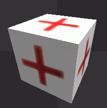 | 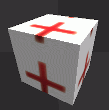 | ||
| UV Rotate | UV Scroll | ||
|---|---|---|---|
| 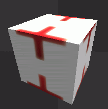 | 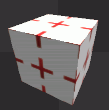 | ||
| UV Wave (Scroll) | UV Wave (Scale) |
Image Sequence animation
Earlier Torque engines used IFL text files to specify a set of images with an optional number of frames to display each image. In Torque 3D, a similar effect can be achieved by putting all of the frames into a single texture, then setting the sequenceFramePerSec and sequenceSegmentSize fields of the Material (either manually, or via the Material Editor). For example, a 6-frame sequence, each frame sized 128x128 would be packed into a single texture of size 768x128.
The Material definition to display each frame for 1 second is shown below:
singleton Material(
{
diffuseMap[0] = "art/shapes/examples/image_sequence";
sequenceSegmentSize = 1 / 6; // 1 / numFrames
sequenceFramePerSec = 1;
};
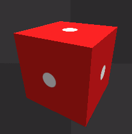
There are two options available when UV mapping the model prior to export; neither work with tiled UVs.
- UV map a single frame within the packed texture, and do not set the Scale bit in the Material animFlags. In the packed texture above, the U coordinate would be from 0.0 - 0.167. With this approach, the same packed texture can be used for UV mapping, however, the model will need to be remapped to change the number of frames in the sequence.
- UV map the texture of a single frame only (or the entire packed texture), and set the Scale bit in the Material animFlags. In this case, the U coordinate would be from 0.0 - 1.0, and will be automatically scaled by Torque 3D to match the size of each frame in the packed texture. The advantage of this approach is that the number and size of the frames can be changed (by editing the texture, and modifying the Material parameters accordingly) without having to remap the model UVs.
Note: If you map the full 0.0-1.0 UV range but forget to set the Scale animFlag bit, the material will appear to scroll instead of flip between the image frames.
Conclusion
This article has described the art process when working with Torque. Armed with this knowledge you should be able to manipulation your models inside of the engine.